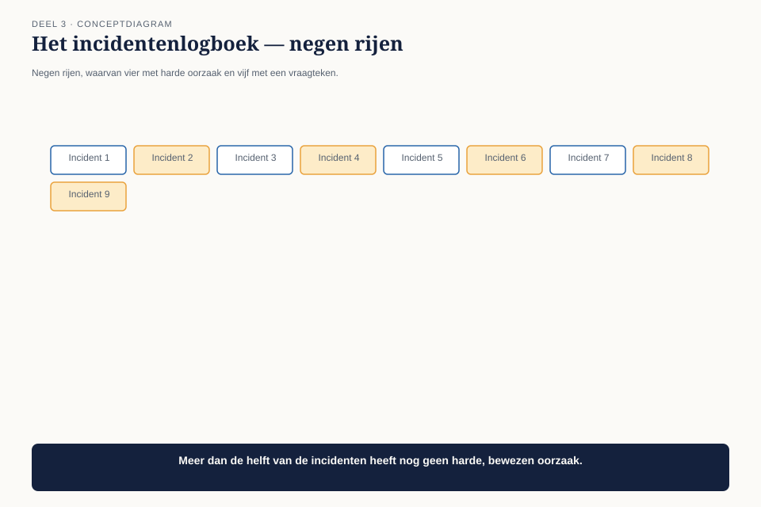
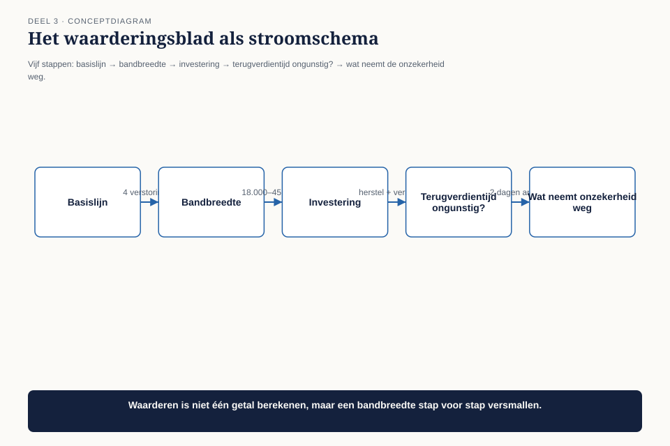
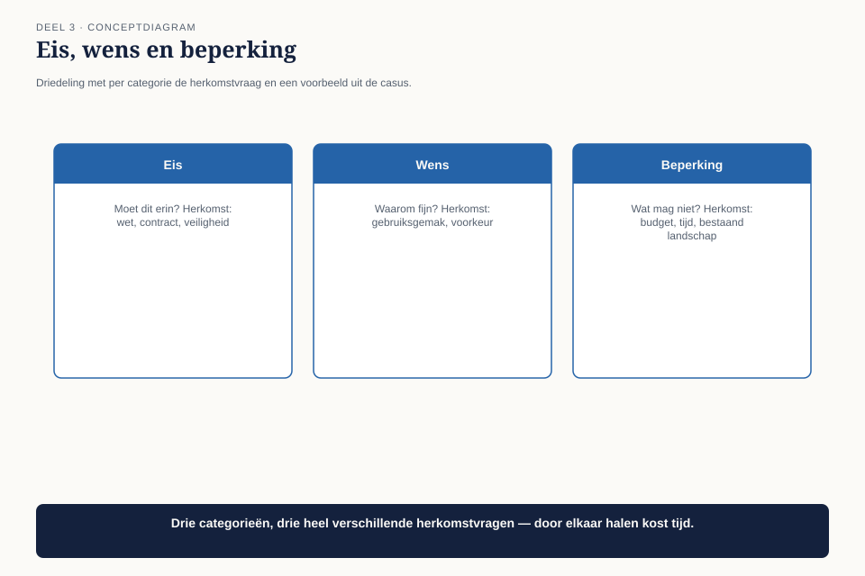
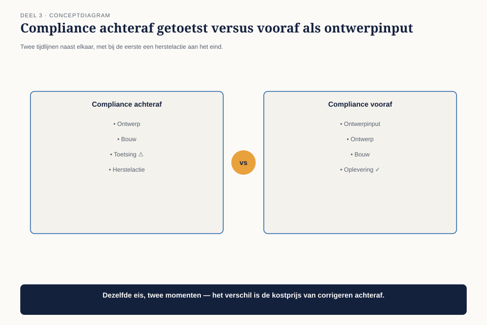
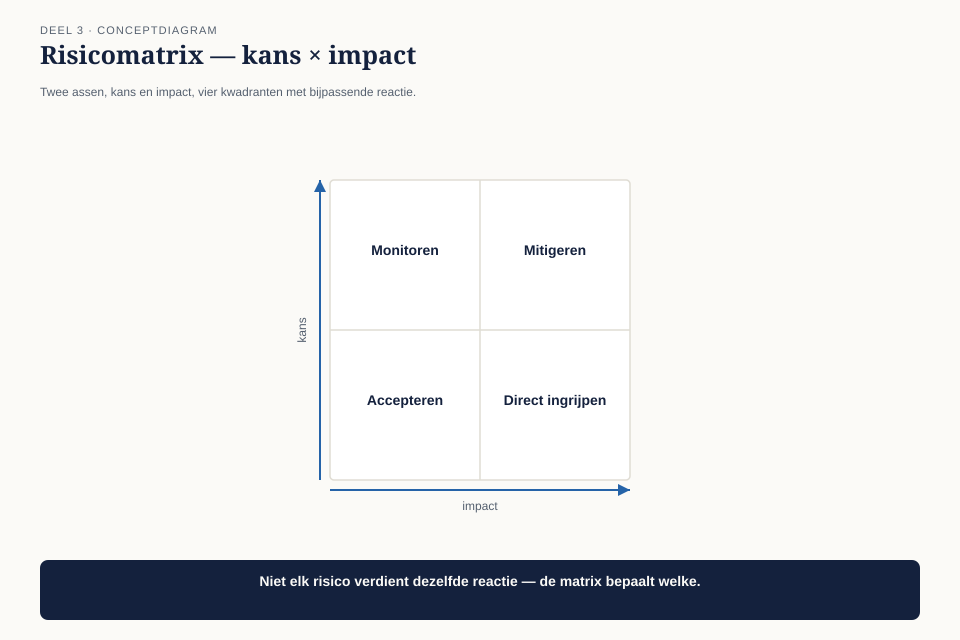

Deel 3 — Business Technology Strategy II: waarde
Niveau 1 — De kern | Deelnemersreader BTABoK-cursus, Ductus
3.1 Waar dit deel over gaat
In deel 2 leerde Claudette de eenheid waarin Meridiaan waarde meet. Dat loste één probleem op en onthulde een tweede. De financieel directeur vroeg haar hoeveel herstelwerk in het koppelvlak zat. Ze wist het niet.
Dit deel gaat over wat je doet als je de eenheid wél kent maar de cijfers niet. Dat is de normale toestand, niet de uitzondering. Weinig architectuurbeslissingen worden genomen met volledige informatie, en de BoK verwacht ook niet dat je daarop wacht — de tenet uit deel 1 was juist: beslis op het laatst verantwoorde moment, met net genoeg bewijs.
“Net genoeg bewijs” is een vaardigheid. Dit deel leert hem.
Aan het eind van dit deel kun je:
- een investering waarderen ook als de cijfers onvolledig zijn, zonder ze te verzinnen;
- vier investeringen tegen elkaar afwegen op meer dan alleen terugverdientijd;
- eisen en beperkingen scheiden van wensen, en beide herleiden tot hun bron;
- compliance behandelen als ontwerpinput in plaats van als checklist achteraf;
- een eenvoudige risicoafweging maken die kans en impact uit elkaar houdt.
3.2 De vraag die blijft hangen
Hoeveel van dat herstelwerk zit in dat ene koppelvlak?
Claudette heeft twee weken om die vraag te beantwoorden voordat het onderwerp terugkomt. Ze doet wat de meeste mensen in haar positie zouden doen: ze vraagt het incidententeam om de cijfers.
Het antwoord dat ze krijgt is geen antwoord. Het incidentensysteem registreert meldingen, niet oorzaken. Van de negen verstoringen in het afgelopen jaar zijn er vier expliciet aan dit koppelvlak toegeschreven. Van de overige vijf staat de oorzaak niet vermeld, of luidt hij “diverse” of “onbekend”. Niemand heeft ooit bijgehouden hoeveel hersteltijd per verstoring naar dit specifieke koppelvlak ging.

Ze staat voor een keuze die elke architect kent en die zelden wordt benoemd: wachten tot de cijfers compleet zijn, of nu al iets zeggen op basis van wat er is.
Dit is observatie O3: elk voorstel van Claudette strandt op de vraag wat het kost en wat het oplevert. Haar antwoord is steevast een kwalitatieve risicoformulering.
3.3 Waarderen is geen rekenen
De BoK behandelt business valuation als een competentie op zichzelf, naast investment prioritization. Het onderscheid is belangrijker dan het lijkt: waarderen is niet hetzelfde als een exacte berekening maken. Waarderen is een onderbouwde schatting maken die iemand anders kan navolgen en aanvechten.
Drie regels die het verschil maken tussen een goede schatting en giswerk.
Regel 1 — scheid wat je weet van wat je aanneemt. Vier verstoringen zijn hard toe te schrijven aan het koppelvlak. Dat is een feit. Of de vijf onbekende verstoringen er ook onder vallen, is een aanname. Meng die twee nooit in één getal zonder het onderscheid zichtbaar te houden.
Regel 2 — geef een bandbreedte, geen punt. “Dit kost ons ongeveer 30.000 euro per jaar” klinkt overtuigend en is bijna altijd verzonnen precisie. “Dit kost ons tussen de 18.000 en 45.000 euro per jaar, afhankelijk van hoeveel van de vijf onbekende verstoringen hetzelfde koppelvlak raken” is minder overtuigend en veel eerlijker — en overtuigt uiteindelijk beter, omdat het de vraag beantwoordt vóórdat iemand hem stelt.
Regel 3 — vermeld wat de schatting zou veranderen. Een goede waardering benoemt expliciet welke informatie de uitkomst het meest zou verscherpen. Bij Claudette: twee dagen analyse van de correctielogs zou de bandbreedte van 27.000 euro breed terugbrengen tot een marge van een paar duizend euro. Dat getal — twee dagen — maakt de vraag “zullen we eerst meten of nu al beslissen” zelf beslisbaar.
Vergelijk dit met opdracht 6 uit deel 2: het voorstel dat op cijfers strandde, was vaak niet zwak maar ongemeten. Dit deel geeft je het gereedschap om het verschil zichtbaar te maken zonder te wachten tot je alles weet.
3.4 Het waarderingsblad
Voor situaties zoals die van Claudette gebruiken we een vast stramien van vijf stappen. Het is geen rekenmodel maar een denkvolgorde — bedoeld om te voorkomen dat je bij stap vijf begint, wat de meeste mislukte businesscases doen.

| Stap | Vraag | Bij Claudette |
|---|---|---|
| 1. Basislijn | wat kost de huidige situatie, met wat we zeker weten? | 4 verstoringen × bekende hersteltijd = harde ondergrens |
| 2. Bandbreedte | wat is het redelijke bereik als we de onzekere gevallen meewegen? | 4 tot 9 verstoringen, dus een marge van 18.000 tot 45.000 euro |
| 3. Investering | wat kost de oplossing, inclusief wat er niet meer gedaan wordt om dit te doen? | herstelkosten van het koppelvlak plus verdringing van ander werk |
| 4. Terugverdientijd bij het ongunstigste geval | is dit ook de moeite waard als het lage scenario waar blijkt? | reken altijd het pessimistische scenario door, nooit alleen het optimistische |
| 5. Wat de onzekerheid zou wegnemen | welke informatie zou de bandbreedte het meest versmallen, en wat kost die informatie? | twee dagen loganalyse |
Stap 4 is waar de meeste voorstellen worden opgeblazen zonder dat iemand het merkt. Een businesscase die alleen bij het optimistische scenario positief uitvalt, is geen businesscase — het is een hoop.
3.5 Vier soorten investeringen, niet twee
Een veelgemaakte fout is investeringen alleen op terugverdientijd beoordelen. Dat werkt voor één van de vier soorten investeringen die een architect tegenkomt, en niet voor de andere drie.
| Type | Kenmerk | Hoe je hem waardeert | Voorbeeld bij Meridiaan |
|---|---|---|---|
| Renderend | levert direct meetbare besparing of omzet op | terugverdientijd, zoals in 3.4 | het koppelvlak repareren |
| Beschermend | voorkomt een verlies dat nog niet is opgetreden | verwacht verlies (kans × impact) tegen investeringskosten | uitwijkvoorziening voor de uitkeringsstraat |
| Verplicht | is niet optioneel — wet, toezichthouder, contract | geen rendementsvraag maar een deadline en een ondergrens aan kwaliteit | de stelselovergang |
| Optiescheppend | levert nu weinig op, opent later iets | wat kost het om de mogelijkheid open te houden, tegen wat je verliest als je hem niet opent | een generiek aansluitmechanisme voor een nieuw fonds |
Claudette’s koppelvlak is renderend — dat is de makkelijkste categorie, en toch was het de categorie waarop ze vastliep, omdat ze de vraag als beschermend behandelde (“minder risico”) in plaats van als renderend (“minder herstelwerk”). Die verwarring van type is vaker de oorzaak van een afgewezen voorstel dan een gebrek aan cijfers.
Waarschuwing. De categorie verplicht wordt in de praktijk misbruikt als vluchtroute: “dit moet, dus hoeven we het niet te onderbouwen.” Dat is onjuist. Verplicht betekent dat de vraag óf verandert — niet van “levert dit genoeg op” naar niets, maar naar “wat is de goedkoopste manier om aan de eis te voldoen, en welke ondergrens aan kwaliteit mogen we niet onderschrijden.” Zie 3.7.
3.6 Eisen versus wensen versus beperkingen
De BoK behandelt requirements discovery en constraints analysis als één competentie, en dat is geen toeval — de twee worden voortdurend verward, en die verwarring kost architecten hun geloofwaardigheid.

| Wat het is | Herkomstvraag | Wat er gebeurt als je het negeert | |
|---|---|---|---|
| Eis | een voorwaarde die het resultaat ongeldig maakt als hij niet vervuld is | wie heeft dit vastgesteld, en waar staat het? | het resultaat wordt afgekeurd of onbruikbaar |
| Wens | een voorkeur die de waarde verhoogt maar niet voorwaardelijk is | van wie is dit, en hoe zwaar weegt zijn stem? | het resultaat is minder goed, niet ongeldig |
| Beperking | een grens die van buiten is opgelegd en niet ter discussie staat | welke externe partij legt dit op? | het resultaat is niet toegestaan, ongeacht kwaliteit |
Het onderscheid zit in de herkomstvraag, niet in hoe zwaar iets voelt. “De uitkering moet op tijd betaald worden” klinkt als een eis en is er ook een — bij wet. “Het dashboard moet er modern uitzien” klinkt ook dwingend en is een wens, tenzij iemand kan aanwijzen wie dat heeft vastgesteld en op welk gezag.
De oefening die dit levend maakt: neem elke “moet”-zin uit een projectdocument en vraag: als ik deze zin schrap, wordt het resultaat dan ongeldig, minder goed, of verboden? Het antwoord bepaalt de kolom. Werkboekopdracht 3 laat je dit doen op een echt document.
3.7 Compliance als ontwerpinput
Bij Meridiaan is compliance niet één van de negen competenties in deze pijler — het is de competentie die de andere acht begrenst. Toezicht door DNB en AFM, de eisen aan de pensioenadministratie, de stelselwet: die liggen niet naast het ontwerp maar eronder.
De fout die je overal tegenkomt is compliance behandelen als iets dat ná het ontwerp wordt getoetst — een vinkje aan het eind. Dat is achterwaarts. Compliance hoort bij stap 1 van een ontwerp, niet bij de oplevering.

Drie vragen die compliance omzetten van blokkade naar ontwerpinput:
- Welke eis volgt hieruit, letterlijk? Niet “we moeten voldoen aan de AVG” maar de specifieke bepaling die het ontwerp raakt.
- Wat is de goedkoopste manier om eraan te voldoen? Compliance heeft geen optimum boven de eis — voldoen is voldoen. Meer doen dan de eis vraagt, is een wens, geen verplichting, en moet als zodanig worden afgewogen.
- Wat is de ondergrens die we niet mogen onderschrijden, ook niet onder tijdsdruk? Dit is de vraag die in de praktijk het vaakst wordt overgeslagen, en de vraag die achteraf het duurst blijkt.
3.8 Risico in twee getallen
De BoK behandelt risicomanagement uitgebreid; voor de praktijk van dit niveau is één ding voldoende om te beheersen: risico is kans maal impact, en de twee mogen nooit tot één woord worden samengeperst.
“Groot risico” zegt niets. Is de kans groot en de impact klein, of andersom? Dat bepaalt een compleet andere reactie.

| Impact laag | Impact hoog | |
|---|---|---|
| Kans laag | negeren of accepteren | monitoren, uitwijkplan klaar hebben |
| Kans hoog | structureel oplossen — het kost je toch al continu | direct aanpakken, ongeacht de kosten van de oplossing |
Claudette’s koppelvlak zit rechtsonder middenin: de kans is aannemelijk hoog (eens per zes weken) en de impact is potentieel hoog (een deelnemer die zijn uitkering fout krijgt en dat niet zelf merkt). Dat kwadrant duldt geen “we pakken het volgende kwartaal wel op” — en dat is precies waarom de handleiding uit deel 1 opdracht 6 aan dit koppelvlak heeft gekoppeld.
Vaak gemaakte fout. Mensen laten kans en impact los van elkaar bewegen in hun hoofd: een lage kans voelt geruststellend, ook als de impact catastrofaal is. Dat is de reden dat zeldzame gebeurtenissen met grote gevolgen — een datalek, een verkeerd berekende pensioenuitkering voor een hele cohort — stelselmatig worden onderschat. Vraag altijd naar allebei, apart.
3.9 Terug naar het MT
Claudette gaat niet wachten tot de cijfers compleet zijn. Ze presenteert het waarderingsblad zoals het is: de harde ondergrens, de bandbreedte, en de twee dagen die nodig zijn om hem te versmallen.
“Vier verstoringen zijn zeker aan dit koppelvlak toe te schrijven, dat is 18.000 euro per jaar aan herstelwerk. Als de vijf onbekende verstoringen er ook onder vallen — wat niet zeker is — loopt dat op tot 45.000. Ik kan dat verschil in twee dagen analyse wegnemen. Tot die tijd stel ik voor uit te gaan van het lage getal, want zelfs dat rechtvaardigt de reparatie.”
Dit is geen ander verhaal dan haar afgewezen verzoek uit deel 1. Het is hetzelfde verzoek, met de onzekerheid zichtbaar gemaakt in plaats van weggemoffeld achter het woord “risico”.
De financieel directeur keurt de twee dagen analyse goed, niet de reparatie zelf. Dat is precies het juiste besluit op precies het juiste moment — de tenet uit deel 1 in actie: beslis op het laatst verantwoorde moment, met net genoeg bewijs om door te kunnen.
3.10 Observatie O3 gesloten
Elk voorstel van Claudette strandt op de vraag wat het kost en wat het oplevert. Haar antwoord is steevast een kwalitatieve risicoformulering.
Het verschil tussen deel 1 en nu is niet dat Claudette meer cijfers heeft. Ze heeft nog steeds geen volledig beeld van het koppelvlak. Het verschil is dat ze onzekerheid is gaan behandelen als iets dat je meet en meldt, in plaats van iets dat je verbergt achter een kwalitatief woord.
Drie dingen zijn veranderd:
Ze scheidt wat ze weet van wat ze aanneemt. Vier verstoringen zeker, vijf onzeker — in plaats van “negen verstoringen, waarschijnlijk door dit koppelvlak.”
Ze geeft een bandbreedte met een reden om hem te versmallen. 18.000 tot 45.000 euro, en twee dagen werk die het verschil zouden oplossen — in plaats van “aanzienlijke kosten.”
Ze onderscheidt kans en impact. Een kwadrant, geen los woord “risico” — waardoor het duidelijk is waaróm dit niet kan wachten, niet alleen dát het niet zou moeten wachten.
In deel 4 gaat het over de andere kant van diezelfde vergadering: waarom haar bezwaar niet in de notulen belandde, ook al had ze — met dit blad — gelijk. Dat is observatie O4, en het ligt niet in Business Technology Strategy maar in Human Dynamics.
3.11 Kernbegrippen
| Begrip | Betekenis in deze cursus |
|---|---|
| Waarderen | een onderbouwde, navolgbare schatting maken — geen exacte berekening en geen giswerk |
| Waarderingsblad | vijf stappen: basislijn, bandbreedte, investering, terugverdientijd bij het ongunstigste scenario, wat de onzekerheid zou wegnemen |
| Renderend / beschermend / verplicht / optiescheppend | de vier soorten investeringen, elk met een eigen waarderingslogica |
| Eis / wens / beperking | onderscheiden via de herkomstvraag: ongeldig, minder goed, of verboden als je het negeert |
| Kans × impact | risico bestaat uit twee losse getallen die nooit tot één woord mogen samensmelten |
Volgende deel: deel 4 — Human Dynamics I: stakeholders. Claudette had gelijk over het koppelvlak, maar haar bezwaar in de portefeuilleraad haalde de notulen niet. Dat wordt observatie O4.